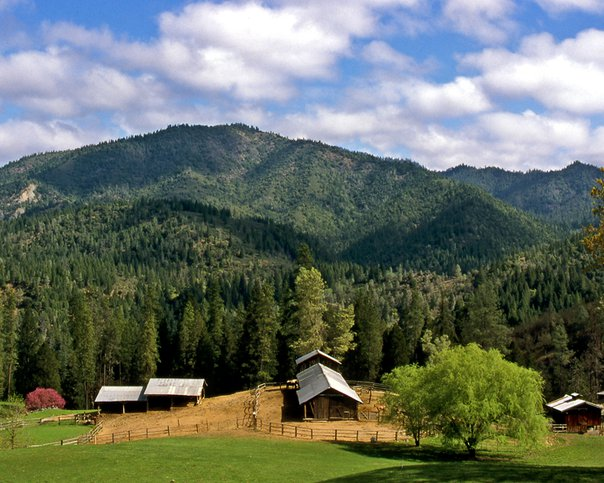
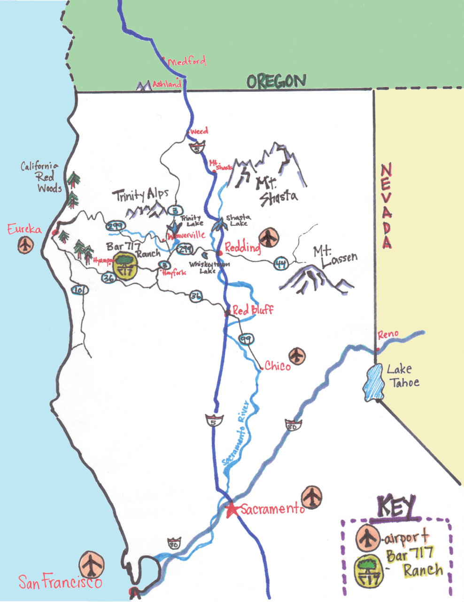
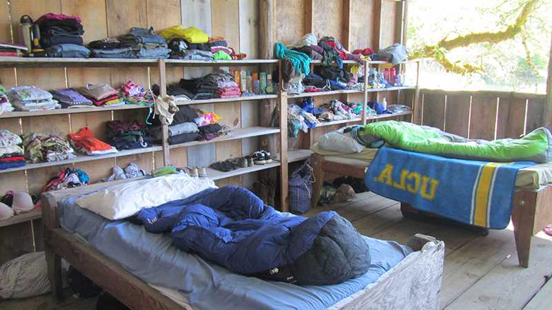
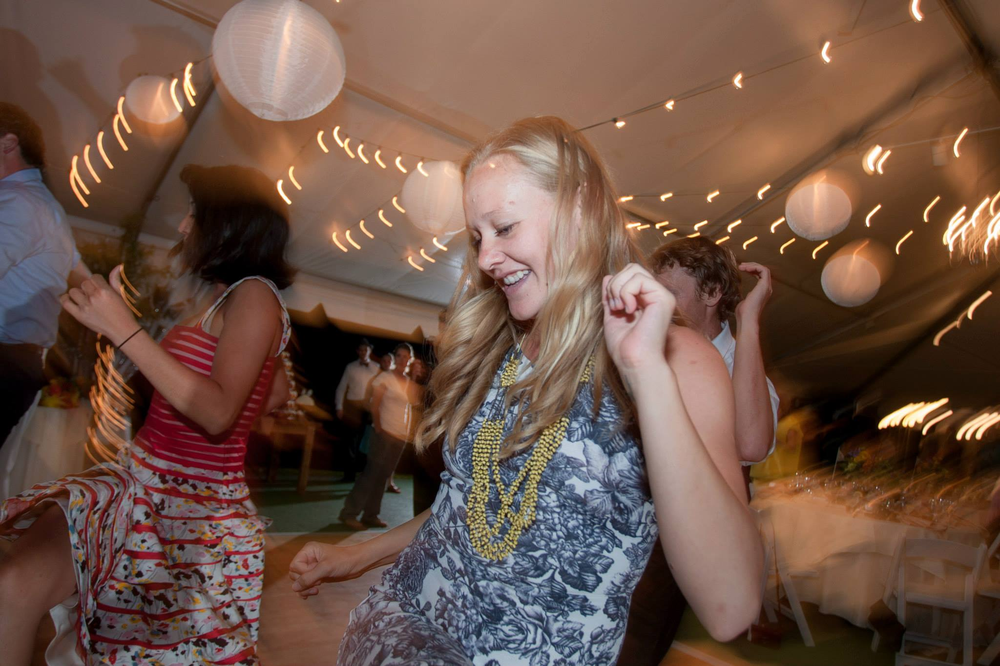
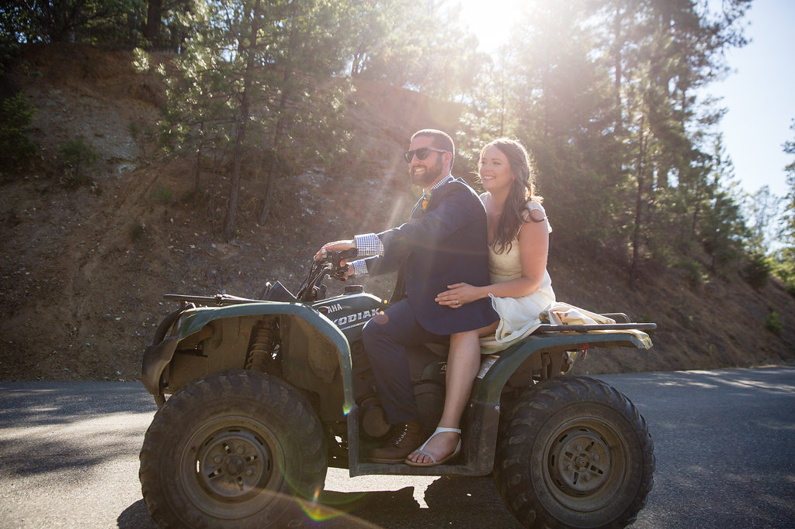
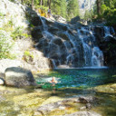
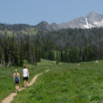
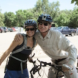
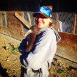

<!DOCTYPE html>
<html lang="en">
  <head>
    <meta charset="utf-8">
    <meta http-equiv="X-UA-Compatible" content="IE=edge,chrome=1">
    <meta name="viewport" content="width=device-width">
    <title>Kelly &amp; Pete
    </title>
    <link rel="alternate" href="http://bradygadomski.com/feed.xml" type="application/rss+xml" title="September 12th, 2015 &amp;mdash; Trinity County, California">
    <link rel="stylesheet" href="http://fonts.googleapis.com/css?family=Lora:400,700,400italic,700italic|Calligraffitti:400,700,400italic,700italic|Merriweather+Sans:400,700,300">
    <link rel="stylesheet" href="/styles/main.css">
    <!--
    HTML5 Shim and Respond.js IE8 support of HTML5 elements and media queries
    WARNING: Respond.js doesn't work if you view the page via file://
    --><!--[if lt IE 9]>
    <script src="https://oss.maxcdn.com/html5shiv/3.7.2/html5shiv.min.js"></script>
    <script src="https://oss.maxcdn.com/respond/1.4.2/respond.min.js"></script>
    <![endif]-->
  </head>
</html>
<body data-spy="scroll" data-target="sidebar">
  <nav role="navigation" class="navbar navbar-default navbar-fixed-bottom visible-xs-block">
    <div class="container-fluid">
      <div class="navbar-header">
        <button type="button" data-toggle="collapse" data-target="#navbar-collapse" class="navbar-toggle"><span class="sr-only">Toggle navigation</span><span class="icon-bar"></span><span class="icon-bar"></span><span class="icon-bar"></span></button><a href="#" class="navbar-brand">Kelly &amp; Pete</a>
      </div>
      <div id="navbar-collapse" class="collapse navbar-collapse">
        <ul class="nav navbar-nav">
          <li class="dropdown"><a href="#" data-toggle="dropdown" class="dropdown-toggle">The Location<span class="caret"></span></a>
            <ul role="menu" class="dropdown-menu">
              <li><a href="#the-location">The Location</a></li>
              <li><a href="#getting-there">Getting There</a></li>
              <li><a href="#accommodations">Accommodations</a></li>
            </ul>
          </li>
          <li class="dropdown"><a href="#" data-toggle="dropdown" class="dropdown-toggle">The Schedule<span class="caret"></span></a>
            <ul role="menu" class="dropdown-menu">
              <li><a href="#the-schedule">The Schedule</a></li>
              <li><a href="#meals">Meals</a></li>
            </ul>
          </li>
          <li class="dropdown"><a href="#" data-toggle="dropdown" class="dropdown-toggle">Packing list<span class="caret"></span></a>
            <ul role="menu" class="dropdown-menu">
              <li><a href="#ranch-classy">Ranch classy</a></li>
            </ul>
          </li>
          <li><a href="#things-to-do">Things to Do</a></li>
        </ul>
      </div>
    </div>
  </nav>
  <div class="jumbotron">
    <div class="container">
      <h1><a href="http://bradygadomski.com">Kelly &amp; Pete</a><span class="hidden-xs hidden-sm">&emsp;<small>September 12th, 2015 &mdash; Trinity County, California</small></span></h1>
    </div>
  </div>
  <div class="container">
    <ul class="nav nav-tabs">
      <li role="presentation" class="active"><a href="/">Details</a></li>
      <li role="presentation"><a href="/rsvp">RSVP</a></li>
      <li role="presentation"><a href="/registry">Registry</a></li>
      <li role="presentation"><a href="/updates">Updates</a></li>
    </ul>
    <div class="row">
      <sidebar class="col-sm-4 hidden-xs">
        <ul data-spy="affix" data-offset-top="300" data-offset-bottom="200" class="nav">
          <li><a href="#the-location">The Location</a>
            <ul class="nav">
              <li><a href="#getting-there">Getting There</a></li>
              <li><a href="#accommodations">Accommodations</a></li>
            </ul>
          </li>
          <li><a href="#the-schedule">The Schedule</a>
            <ul class="nav">
              <li><a href="#meals">Meals</a></li>
            </ul>
          </li>
          <li><a href="#packing-list">Packing list</a>
            <ul class="nav">
              <li><a href="#ranch-classy">Ranch classy</a></li>
            </ul>
          </li>
          <li><a href="#things-to-do">Things to Do</a></li>
        </ul>
      </sidebar>
      <content class="col-sm-8 col-xs-12"><p>Kelly Brady and Pete Gadomski are celebrating their marriage on September 12<span class="ord">th</span>, 2015.
The celebration will be at <a href="http://www.bar717.com/">The Bar 717 Ranch</a> in Trinity County, California.
We hope that you’ll join us for a weekend of fun and&nbsp;community!</p>
<p>“Formal” invitations have been sent out.
Please <a href="mailto:bradygadomski@gmail.com">send us an email</a> if you have any&nbsp;questions.</p>
<p>We can’t wait to see you in&nbsp;September!</p>
<div class="row" style="margin-top: 40px;">
<div class="col-xs-8 col-xs-offset-2">
<div class="thumbnail">
  
  <div class="caption">
    <p>The Bar 717 Ranch in the&nbsp;Spring.</p>
  </div>
</div>
</div>
</div>


<h1 id="the-location">The&nbsp;Location</h1>
<p>The Bar 717 Ranch is located between Hayfork and Hyampom, California, nestled into the steep hills and valleys of Trinity County.
During the summer, the ranch is the site of Camp Trinity, a coeducational summer camp for kids aged eight to seventeen; Kelly and Pete met when they were both counselors at the camp.
You can find out more about the camp’s history <a href="http://www.bar717.com/history/">on their website</a>.</p>
<div class="row" style="margin-top: 40px;">
<div class="col-xs-8 col-xs-offset-2">
<p><a href="california-map.jpg"></a></p>
</div>
</div>

<h2 id="getting-there">Getting&nbsp;There</h2>
<p>The Bar 717 Ranch is located about two hours west of Redding, California, and is generally assessable only by private vehicle, no shuttles or buses are available.
<a href="https://www.google.com/maps/place/Bar+717+Ranch/@40.6205833,-123.3770636,15z/data=!4m2!3m1!1s0x54d3bd20c45d22b5:0x636ee857e506bb94">See where the camp is on Google Maps</a>.
The Bar 717 website also has some <a href="http://www.bar717.com/about-us/location/">hand written directions</a> to the&nbsp;ranch.</p>
<p>If you are looking to fly in from around the country, <a href="http://www.ci.redding.ca.us/transeng/airports/index.htm">Redding</a> and <a href="https://plus.google.com/100151413109057686697/about?gl=us&amp;hl=en">Eureka/Arcata</a> are both about two hours from camp.
<a href="http://www.sacramento.aero/smf/">Sacramento</a> is only about four hours from camp, and <a href="http://www.flysfo.com/">San Francisco</a> is the closest large airport.
<a href="http://www.portofportland.com/PDX_Home.aspx">Portland</a> is another&nbsp;option.</p>
<p>We want to do our best to help people get to our celebration, so if you are willing to provide a carpool or need a ride, please <a href="mailto:bradygadomski@gmail.com">email us</a>.</p>
<div class="alert alert-info">
The roads to camp are windy and mountainous, and have been known to cause trouble even for seasoned car travellers.
If you are prone to carsickness, you may want to pack some Dramamine just in case.
</div>

<div class="alert alert-info">
There may be some construction on the 299 between Redding and camp.
If you’re coming up on I-5 from the south, you might consider taking <span class="caps">CA</span>-36W from Red Bluff — Google Maps can get you there.
</div>

<div class="alert alert-info">
If you’re looking to rent a car in Redding, <span class="caps">CA</span>, unfortunately you usually can’t rent a car after 3pm in Redding, which is after the flights get in.
If this is going to cause you problems, contact us and we can help sort something out to make sure you can make it to the celebration!
</div>


<h2 id="accommodations">Accommodations</h2>
<p>All guests will be staying on platforms unless otherwise arranged by Kelly and Pete.
Here’s the description of platforms from the camp&nbsp;website:</p>
<blockquote>
<p>On the Ranch we have more then 20 Platforms.  These sleeping structures are our own invention, perfectly adapted to our summer climate of warm, dry days and cool nights.  A Platform is a cabin-like structure with 3 walls and a roof, open on 1 side to views of the pasture or forest.  Platforms are grouped into living areas, each no more than a few minutes walk from the main camp area.  Each platform sleeps from 6 to 15 people and has a sink and bathroom.  Shower houses are short walk&nbsp;away.</p>
</blockquote>
<div class="row" style="margin-top: 40px;">
<div class="col-xs-8 col-xs-offset-2">
<div class="thumbnail">
  
  <div class="caption">
    <p>A platform, during&nbsp;camp.</p>
  </div>
</div>
</div>
</div>

<p>We are asking that guests bring a sleeping bag or other bedding for the weekend.
Temperatures this time of year usually range from the 80s to 90s during the day to the 40s and 50s at night (<a href="http://www.wunderground.com/history/airport/KO54/2015/9/16/MonthlyCalendar.html?req_city=Hyampom&amp;req_state=CA&amp;req_statename=&amp;reqdb.zip=96046&amp;reqdb.magic=1&amp;reqdb.wmo=99999">see historical records and averages</a>).
See <a href="/#packing-list">our packing list</a> for a more complete list of things you will need for the&nbsp;weekend.</p>
<p>If you have any questions or issues with the housing, please don’t hesitate to contact&nbsp;us.</p>
<h1 id="the-schedule">The&nbsp;Schedule</h1>
<ul>
<li>Friday, September 11<span class="ord">th</span><ul>
<li><strong>All day</strong>: guests&nbsp;arrive</li>
<li><strong>7pm</strong>: dinner, first meal for all&nbsp;guests</li>
<li><strong>8pm - late</strong>: open mic night, campfire,&nbsp;etc.</li>
</ul>
</li>
<li>Saturday, September 12<span class="ord">th</span><ul>
<li><strong>All day</strong>: guests&nbsp;arrive</li>
<li><strong>8am - 10am</strong>:&nbsp;breakfast</li>
<li><strong>10am - 11am</strong>: sack lunch&nbsp;prep</li>
<li><strong>10am - 5pm</strong>: time to adventure and&nbsp;relax</li>
<li><strong>5pm</strong>: cocktail&nbsp;hour</li>
<li><strong>6pm - late</strong>: ceremony, dinner, party,&nbsp;etc.</li>
</ul>
</li>
<li>Sunday, September 13<span class="ord">th</span><ul>
<li><strong>8am - 10am</strong>:&nbsp;breakfast</li>
</ul>
</li>
</ul>
<div class="row" style="margin-top: 40px;">
<div class="col-xs-6 col-xs-offset-3">
<div class="thumbnail">
  
  <div class="caption">
    <p>And yes, there will be&nbsp;dancing.</p>
  </div>
</div>
</div>
</div>

<h2 id="meals">Meals</h2>
<p>As a part of the weekend, we will be providing meals at the ranch starting with dinner on Friday and running through Sunday morning breakfast.
We will be providing vegetarian options, and will do our best to accommodate special dietary requirements.
There are also limited restaurants in Hyampom and Hayfork, both of which are about thirty minutes away from the&nbsp;ranch.</p>
<h1 id="packing-list">Packing&nbsp;list</h1>
<ul>
<li><strong>Sleeping&nbsp;bag</strong></li>
<li>Pillow</li>
<li>Toiletries (including soap and&nbsp;shampoo)</li>
<li>Sunscreen</li>
<li>Hat</li>
<li>Sunglasses</li>
<li><strong>Flashlight/headlamp</strong> (there is no lighting on&nbsp;platforms)</li>
<li>Sturdy shoes (tennis shoes, running shoes are&nbsp;ok)</li>
<li>A warm layer for the&nbsp;evenings</li>
<li>Swimsuit</li>
<li>Towel (for swimming and&nbsp;bathing)</li>
<li>Party&nbsp;clothes</li>
<li>Musical instruments, if you’d&nbsp;like!</li>
<li>…any other stuff as you see&nbsp;fit</li>
</ul>
<p>The ranch is a completely outdoor setting, with uneven surfaces including grass and gravel, so make sure to pack appropriate shoe&nbsp;attire.</p>
<p>There will be hiking and other adventures happening throughout the weekend, so bring any gear that you’d like to have to get outside and&nbsp;play!</p>
<h2 id="ranch-classy">Ranch&nbsp;classy</h2>
<p>Attire for the ceremony and celebration will be “ranch classy”, known by others as “farm&nbsp;fancy.”</p>
<div class="row" style="margin-top: 40px;">
<div class="col-xs-8 col-xs-offset-2">
<div class="thumbnail">
  
  <div class="caption">
    <p>These guys are doing it&nbsp;right.</p>
  </div>
</div>
</div>
</div>

<p>You know us.
We’re not requiring a specific dress code.
Have fun, be&nbsp;comfortable.</p>
<h1 id="things-to-do">Things to&nbsp;Do</h1>
<p>While we don’t have a ton of scheduled activities for the weekend, there will be plenty going on at the ranch and in the surrounding area, especially on Saturday.
We encourage you to get out and explore the area as much as you can!
We will do our best to connect people who are looking to do similar activities, and will provide detailed information about some of our favorite&nbsp;spots.</p>
<p>Here’s a couple of ideas to inspire&nbsp;you:</p>
<div class="media">
<span class="pull-left"></span>
<div class="media-body">
  <h4 class="media-heading">The&nbsp;River</h4>
  <p>
    A tried and true standby of every counselor on her day off, chilling by the river is a great way to while away the day.
    Hayfork Creek runs right through the ranch, and the <a href="http://en.wikipedia.org/wiki/South_Fork_Trinity_River">South Fork of the Trinity</a> is just a short drive away.
    You can be sure people will be headed to the river every&nbsp;day.
  </p>
</div>
</div>

<div class="media">
<span class="pull-left"></span>
<div class="media-body">
  <h4 class="media-heading">Hiking</h4>
  <p>
    The ranch itself has miles of trails that can keep you occupied for days, or even a whole summer.
    The nearby <a href="http://en.wikipedia.org/wiki/Trinity_Alps">Trinity Alps</a> provide wonderful granite terrain for day hikes or multi-day&nbsp;adventures.
  </p>
</div>
</div>

<div class="media">
<span class="pull-left"></span>
<div class="media-body">
  <h4 class="media-heading">Biking</h4>
  <p>
    If you’re able to get a bike to the ranch, there’s miles of forest service roads, trails, and paved roads for you to&nbsp;explore.
  </p>
</div>
</div>

<div class="media">
<span class="pull-left"></span>
<div class="media-body">
  <h4 class="media-heading">Just&nbsp;Relax</h4>
  <p>
    And of course, there’s going to be plenty of time to kick back, open a beverage, and catch up with friends and family.
    Maybe a goat,&nbsp;too.
  </p>
</div>
</div>


<h1 id="we-can-t-wait-">We can’t&nbsp;wait!</h1>
<p>We are looking forward to seeing all of you in September 2015 for our big&nbsp;party!</p>

      </content>
    </div>
    <div id="sunflower" class="hidden-xs"></div>
  </div>
  <footer><a href="mailto:bradygadomski@gmail.com">bradygadomski@gmail.com</a></footer>
  <script src="/scripts/jquery.min.js"></script>
  <script src="/scripts/bootstrap.min.js"></script>
</body>